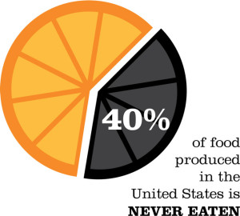
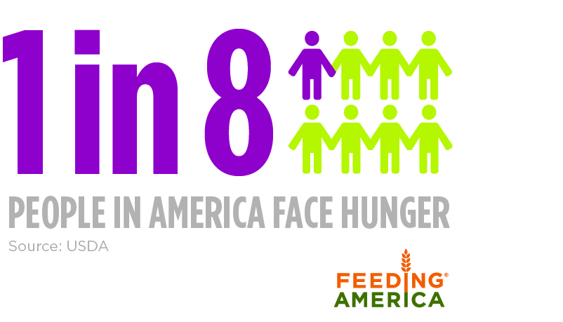
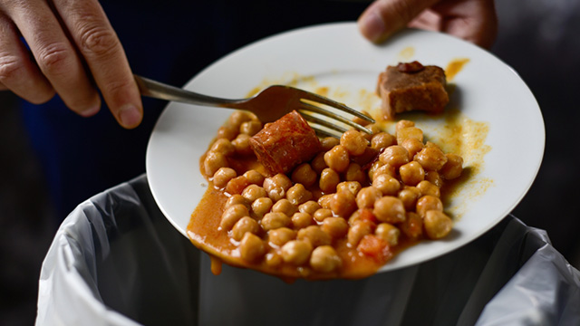
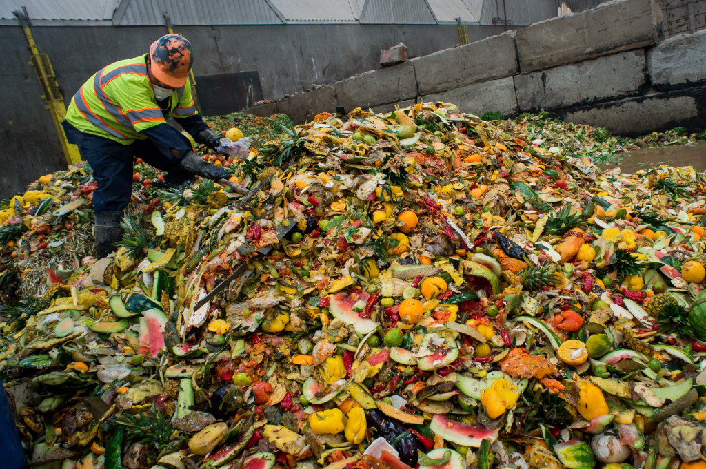

Food
Waste
FactsEach year, up to 40 percent of the food in the United States is never eaten. Around the whole world, the number is close to one thirds.  But at the same time, one in eight Americans struggles to put enough food on the table. Lots of producers and consumers are still wasting large amount of food.  |
DefinitionQ: What is FOOD WASTE? Food waste is food that is lost during any of the four stages of the food supply chain:   Food waste is harmful to a country's economy cause it might increase the gap between the rich and the poor. |
Solution
|